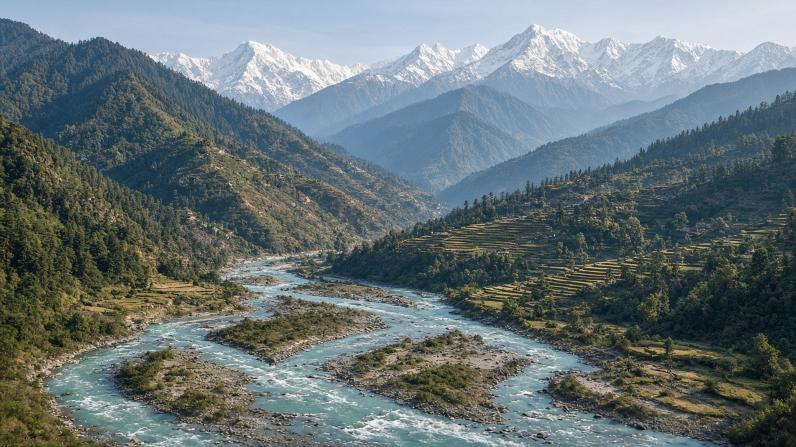
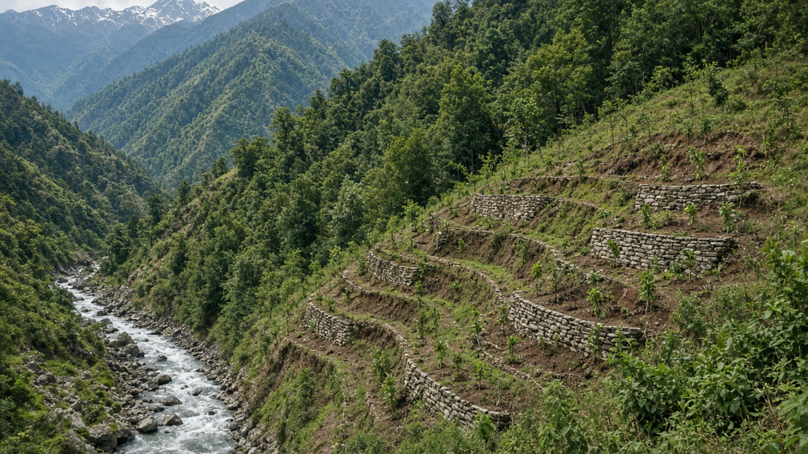
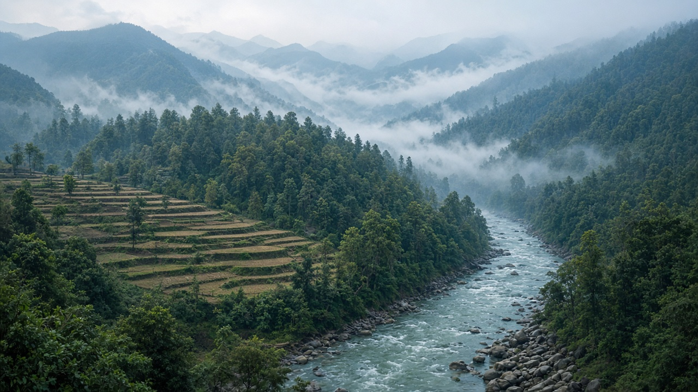

Watershed Management and River Basin Planning
Published on August 1, 2026

Watershed management is the practice of protecting, restoring, and using land and water resources within a drainage basin in an integrated way. A watershed is the area of land where all rainfall and snowmelt eventually flow into a common outlet such as a river, lake, or wetland. Because water moves across administrative boundaries, effective management requires looking at the entire basin rather than managing rivers, forests, and farms in isolation. River basin planning brings together hydrologists, ecologists, engineers, policymakers, and local communities to balance water supply, flood control, agriculture, energy production, and ecosystem health.
In mountainous countries like Nepal, watersheds are especially critical because steep slopes, monsoon rainfall, and fragile soils make the landscape highly sensitive to erosion, landslides, and sedimentation. When forests are cleared from upper catchments, sediment loads increase downstream, reducing reservoir capacity, damaging irrigation canals, and harming aquatic habitats. Watershed management programs often combine reforestation, terracing, check dams, soil conservation, and community-based land-use rules to stabilize slopes and improve water retention. These measures not only protect infrastructure but also enhance dry-season base flows that millions of people depend on for drinking water and irrigation.
River basin planning also involves data-driven decision making. Hydrological models, remote sensing, and streamflow monitoring help planners understand how land-use change, climate variability, and infrastructure development affect water availability. Transparent basin-wide agreements can reduce conflicts between upstream and downstream users, between agriculture and hydropower, and between extraction and environmental needs. Participatory planning workshops that include farmers, women's groups, and local leaders improve the fairness and durability of basin management decisions. As populations grow and climate change alters precipitation patterns, investing in watershed management and coordinated river basin planning is essential for long-term water security and disaster risk reduction across entire landscapes.

जलाधार व्यवस्थापन भनेको जल निकासी बेसिनभित्रका भूमि र पानी स्रोतहरूलाई एकीकृत तरिकाले संरक्षण, पुनर्स्थापना र उपयोग गर्ने अभ्यास हो। जलाधार भनेको त्यस्तो भू-क्षेत्र हो जहाँ सबै वर्षा र हिउँ पग्लिएको पानी अन्ततः नदी, ताल वा सिमसार जस्ता साझा निकासमा बग्छ। पानी प्रशासनिक सीमाहरू पार गरेर बग्ने भएकाले, प्रभावकारी व्यवस्थापनका लागि नदी, वन र खेतलाई छुट्टाछुट्टै व्यवस्थापन गर्नुभन्दा सम्पूर्ण बेसिनलाई हेर्न आवश्यक छ। नदी बेसिन योजनाले जलविज्ञ, पारिस्थितिकीविद्, इन्जिनियर, नीति निर्माता र स्थानीय समुदायहरूलाई एकत्रित गरी पानी आपूर्ति, बाढी नियन्त्रण, कृषि, ऊर्जा उत्पादन र पारिस्थितिकी तन्त्रको स्वास्थ्य बीच सन्तुलन बनाउँछ।
नेपाल जस्ता पहाडी देशहरूमा जलाधारहरू विशेष रूपमा महत्त्वपूर्ण छन्, किनभने खडा ढलान, मनसुन वर्षा र नाजुक माटोले भू-दृश्यलाई कटान, पहिरो र गादो जम्ना प्रति अत्यन्त संवेदनशील बनाउँछ। माथिल्ला क्याचमेन्टका वनहरू काटिएमा तल्लो क्षेत्रमा गादो बढ्छ, जसले जलाशयको क्षमता घटाउँछ, सिंचाइ नहरहरूलाई क्षति पुर्याउँछ र जलीय वासस्थानहरूलाई हानि पुर्याउँछ। जलाधार व्यवस्थापन कार्यक्रमहरूले प्रायः पुनः वनीकरण, सीप, चेक ड्याम, माटो संरक्षण र समुदाय-आधारित भू-उपयोग नियमहरू मिलाएर ढलान स्थिर पार्न र पानी धारण क्षमता बढाउँछन्। यी उपायहरूले पूर्वाधार संरक्षण मात्र होइन, लाखौं मानिसहरूले पिउने पानी र सिंचाइका लागि निर्भर गर्ने शुष्क मौसमको आधार प्रवाह पनि बढाउँछन्।
नदी बेसिन योजनामा डाटा-आधारित निर्णय प्रक्रिया पनि समावेश हुन्छ। जलवैज्ञानिक मोडेल, रिमोट सेन्सिङ र नदी प्रवाह अनुगमनले योजनाकारहरूलाई भू-उपयोग परिवर्तन, जलवायु परिवर्तनशीलता र पूर्वाधार विकासले पानी उपलब्धतामा कसरी असर गर्छ भन्ने बुझ्न मद्दत गर्छ। पारदर्शी बेसिन-व्यापी सम्झौताहरूले माथिल्लो र तल्लो क्षेत्रका प्रयोगकर्ता, कृषि र जलविद्युत, तथा दोहन र वातावरणीय आवश्यकता बीचका द्वन्द्व घटाउन सक्छन्। किसान, महिला समूह र स्थानीय नेतृत्व समावेश गर्ने सहभागितामूलक योजना कार्यशालाहरूले बेसिन व्यवस्थापन निर्णयको निष्पक्षता र दीर्घकालीनता बढाउँछन्। जनसंख्या बढ्दै जाँदा र जलवायु परिवर्तनले वर्षा ढाँचा परिवर्तन गर्दै गएको बेला, जलाधार व्यवस्थापन र समन्वित नदी बेसिन योजनामा लगानी गर्नु दीर्घकालीन जल सुरक्षा र सम्पूर्ण भू-दृश्यमा प्रकोप जोखिम न्यूनीकरणका लागि अपरिहार्य छ।

जलग्रहण प्रबंधन जल निकासी बेसिन के भीतर भूमि और जल संसाधनों की एकीकृत रूप से रक्षा, पुनर्स्थापना और उपयोग करने का अभ्यास है। जलग्रहण वह भू-क्षेत्र है जहाँ सारी वर्षा और बर्फ पिघलने का पानी अंततः नदी, झील या दलदल जैसे सामान्य निकास में बहता है। चूँकि पानी प्रशासनिक सीमाओं को पार करता है, प्रभावी प्रबंधन के लिए नदियों, वनों और खेतों को अलग-अलग प्रबंधित करने के बजाय पूरे बेसिन को देखना आवश्यक है। नदी बेसिन योजना जलविज्ञानियों, पारिस्थितिकीविदों, इंजीनियरों, नीति निर्माताओं और स्थानीय समुदायों को एक साथ लाकर जल आपूर्ति, बाढ़ नियंत्रण, कृषि, ऊर्जा उत्पादन और पारिस्थितिकी तंत्र के स्वास्थ्य के बीच संतुलन बनाती है।
नेपाल जैसे पहाड़ी देशों में जलग्रहण विशेष रूप से महत्वपूर्ण हैं, क्योंकि खड़ी ढलान, मानसून वर्षा और नाज़ुक मिट्टी परिदृश्य को कटाव, भू-स्खलन और गाद जमाव के प्रति अत्यधिक संवेदनशील बनाती हैं। जब ऊपरी कैचमेंट के जंगल साफ किए जाते हैं, तो निचले क्षेत्र में गाद का बोझ बढ़ता है, जिससे जलाशय की क्षमता कम होती है, सिंचाई नहरें क्षतिग्रस्त होती हैं और जलीय आवास क्षतिग्रस्त होते हैं। जलग्रहण प्रबंधन कार्यक्रम अक्सर पुनर्वनीकरण, सीप, चेक डैम, मृदा संरक्षण और समुदाय-आधारित भू-उपयोग नियमों को मिलाकर ढलान को स्थिर करते और जल धारण क्षमता बढ़ाते हैं। ये उपाय न केवल बुनियादी ढाँचे की रक्षा करते हैं, बल्कि शुष्क मौसम के आधार प्रवाह को भी बढ़ाते हैं, जिन पर लाखों लोग पीने के पानी और सिंचाई के लिए निर्भर हैं।
नदी बेसिन योजना में डेटा-आधारित निर्णय लेना भी शामिल है। जलवैज्ञानिक मॉडल, रिमोट सेंसिंग और नदी प्रवाह निगरानी योजनाकारों को यह समझने में मदद करते हैं कि भू-उपयोग परिवर्तन, जलवायु परिवर्तनशीलता और बुनियादी ढाँचे का विकास जल उपलब्धता को कैसे प्रभावित करता है। पारदर्शी बेसिन-व्यापी समझौते ऊपरी और निचले क्षेत्र के उपयोगकर्ताओं, कृषि और जलविद्युत, तथा निष्कर्षण और पर्यावरणीय आवश्यकताओं के बीच संघर्ष को कम कर सकते हैं। किसानों, महिला समूहों और स्थानीय नेताओं को शामिल करने वाली सहभागितापूर्ण योजना कार्यशालाएँ बेसिन प्रबंधन निर्णयों की निष्पक्षता और स्थायित्व बढ़ाती हैं। जनसंख्या बढ़ने और जलवायु परिवर्तन के कारण वर्षा के पैटर्न बदलने पर, जलग्रहण प्रबंधन और समन्वित नदी बेसिन योजना में निवेश करना दीर्घकालिक जल सुरक्षा और पूरे परिदृश्य में आपदा जोखिम न्यूनीकरण के लिए आवश्यक है।